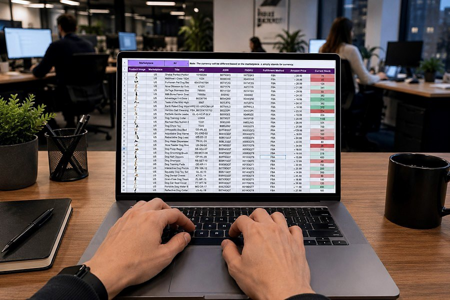
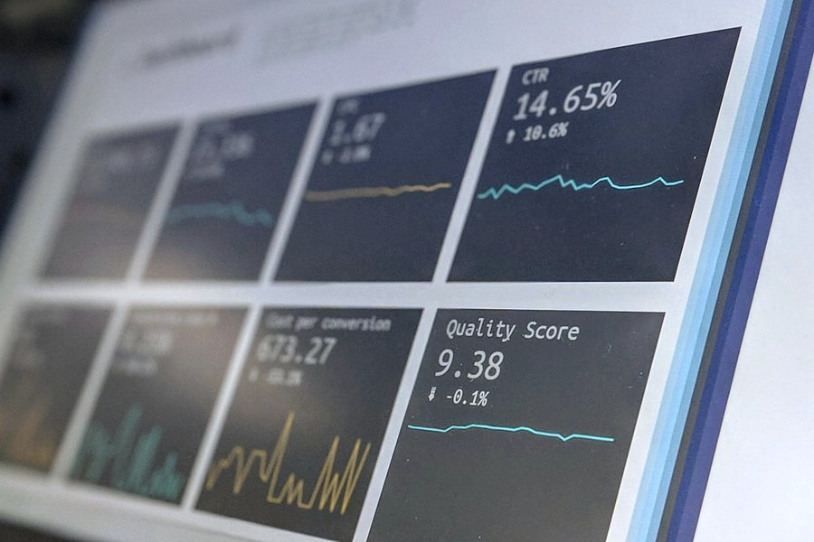
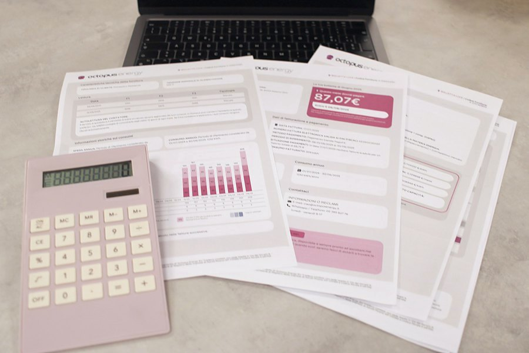

İşinizi güçlendiren SAP çözümleri
Beş çözüm ailesinde, isimleri geçen tüm başlıklarda tamamlanmış ve referans verilebilir proje deneyimimiz bulunuyor.
SAP FI · CO · UFRS Raporlama
Ana defterden maliyet muhasebesine, yasal defterlerden UFRS/TFRS raporlamasına kadar finansal mimarinin tamamını kuruyor; S/4HANA'ya hazır hale getiriyoruz.
Mevcut kurgunuzu devralıp iyileştirebilir ya da sıfırdan tasarlayabiliriz. Her iki durumda da yasal gereklilikler, grup raporlaması ve denetim izlenebilirliği tasarımın başlangıç noktasıdır.
- Genel muhasebe, borçlar/alacaklar, duran varlık uyarlamaları
- Maliyet merkezi, kâr merkezi ve proje (PS) muhasebesi
- New GL migration ve lokalizasyon
- Paralel değerleme ile UFRS / TFRS raporlama

SAP Liquidity Planner & Treasury Entegrasyonları
Nakdin nereden gelip nereye gittiğini gerçek zamanlı görün. Banka entegrasyonları, likidite planlaması ve hazine işlemlerini tek akışta yönetin.
Likidite kalemi türetme kurallarını sizin hesap planınıza göre kurar, banka ekstrelerinden gelen hareketleri otomatik sınıflandırırız. Böylece nakit akış raporu ay sonunu beklemeden her gün güncel kalır.
- Likidite kalemi türetme ve nakit akış raporlaması
- Banka entegrasyonları ve otomatik mutabakat
- SAP TRM ile kredi, mevduat ve türev işlemleri
- Kur ve faiz riski için senaryo analizleri
SAP Claims Management & Fleet Management / VMS
Hasar, poliçe ve araç yönetimini SAP içinde uçtan uca kurgulayarak; filo maliyetlerini, poliçe yenilemelerini ve hasar dosyalarını tek yerden izlenebilir hale getiriyoruz.
Excel'de tutulan poliçe takibi ve hasar dosyaları sisteme taşındığında, yenileme tarihleri otomatik hatırlatılır ve her aracın toplam sahip olma maliyeti muhasebe verisiyle birebir tutarlı hale gelir.
- Poliçe, zeyil ve yenileme süreçlerinin yönetimi
- Hasar dosyası açılışı, ekspertiz ve tazminat takibi
- Araç kartı, bakım, yakıt ve maliyet analizi
- Muhasebe ve maliyet merkezleriyle tam entegrasyon
SAP Data Migration · LSMW & IDoc Uyarlamaları
Veri göçü bir projenin en riskli adımıdır. Kaynak analizinden mutabakatlı kesin göçe kadar tekrarlanabilir, doğrulanabilir bir yöntemle ilerliyoruz.
Her prova göçünün ardından kaynak ve hedef sistem bakiyelerini karşılaştıran mutabakat raporları üretiriz; kesin göç gününde sürpriz olmaz.
- Ana veri ve açık kalem göç stratejisi
- LSMW, LTMC ve özel ABAP yükleme programları
- IDoc tabanlı sistemler arası entegrasyon
- Prova göçleri ve mutabakat raporları

Finansal Süreçler İçin Modern Fiori Ekranları
Kullanıcının günde onlarca kez açtığı ekran, projenin gerçek yüzüdür. Onay akışlarından raporlara kadar finansal süreçleri sade, mobil uyumlu Fiori uygulamalarına taşıyoruz.
Önce hangi işlemin günde kaç kez ve kim tarafından yapıldığını ölçer, en çok zaman kaybettiren ekrandan başlarız. Böylece yatırımın karşılığı ilk haftadan görülür.
- Rol bazlı Fiori Launchpad kurgusu
- Onay akışları ve mobil erişim
- Gömülü analitik ve KPI kartları
- Özel uygulama geliştirme (SAPUI5)
e-Belge Süreçlerinin SAP İçinde Uçtan Uca Otomasyonu
Fatura kesmek bir gönderim işi değil, muhasebe işidir. e-Fatura, e-Arşiv, e-İrsaliye ve e-Defter akışlarını SAP'nin içine alıyor; belgenin durumunu muhasebe kaydının üzerinde izlenebilir hâle getiriyoruz.
Entegratörünüz hangisi olursa olsun kurgu değişmez: belge SAP'de üretilir, durumu SAP'de izlenir, muhasebe kaydı gerçeğin gerisinde kalmaz. Ay sonunda "kaç belge kestik, kaçı muhasebeleşti" sorusunun cevabı tek rapordan çıkar.
- Giden belgeler: e-Fatura, e-Arşiv, e-İrsaliye üretimi ve durum takibi
- Gelen faturaların sipariş ve mal kabul kayıtlarıyla otomatik eşleştirilmesi
- İptal, ret ve iade senaryolarının muhasebe karşılıklarıyla tanımlanması
- e-Defter tutarlılık kontrolleri ve arşiv erişim kurgusu

Enflasyon Düzeltmesinin VUK ve TFRS Tarafında SAP'de Kurgulanması
Enflasyon düzeltmesi tek seferlik bir hesaplama değil, her dönem tekrarlanan bir süreçtir. Parasal olmayan kalemlerin tespitinden düzeltilmiş amortismana, paralel defterlerin tutarlılığından karşılaştırmalı dönem sunumuna kadar tüm adımları Excel'de değil, sistemin içinde kurguluyoruz.
Kritik nokta, düzeltmenin muhasebeden kopuk bir hesap tablosunda yapılmamasıdır. Katsayılar, parasal olmayan kalem listesi ve düzeltilmiş amortisman aynı sistemde yaşadığında, denetçinin istediği izlenebilirlik kendiliğinden oluşur; geçmiş dönem karşılaştırmaları da yeniden hesaplanmak zorunda kalmaz.
- Parasal / parasal olmayan ayrımının hesap planı üzerinde tanımlanması
- Duran varlıklarda düzeltilmiş değer ve düzeltilmiş amortisman için ayrı değerleme alanı
- VUK ve TFRS defterlerinin paralel yürütülmesi, karşılaştırmalı dönem sunumu
- Düzeltme sonuçlarının muhasebeleştirilmesi ve denetim izlenebilirliği
Not: Enflasyon düzeltmesinin hangi dönemde ve hangi kapsamda uygulanacağı mevzuatla belirlenir ve değişebilir. Bu çözüm sürecin sistem tarafını kapsar; uygulanabilirlik değerlendirmesi mali müşaviriniz ve denetçinizle birlikte yapılmalıdır.
S/4HANA Geçişinde Yol Haritası, Hazırlık ve Canlı Geçiş
Geçiş yaklaşımı bir altyapı tercihi gibi görünür; oysa sonucunu finans ekibi yaşar. Mevcut sisteminizin fotoğrafını çıkarıp Brownfield, Greenfield ve seçici veri taşıma seçeneklerini sizin verinizle karşılaştırıyor, kararı verilerle alıyoruz.
Projeye başlamadan önce dört listeyi çıkarırız: üç yıldır hareket görmemiş hesaplar, bir yıldır çalıştırılmamış özel programlar, şirket kodu ve yıl bazında hareket satırı sayıları, mükerrer ana veri kayıtları. Bu dört liste elinize geçtiğinde "sadeleşmeye ihtiyacımız var mı" sorusu bir görüş meselesi olmaktan çıkar.
- Hazırlık analizi: ölü hesaplar, kullanılmayan geliştirmeler, veri hacmi
- Brownfield / Greenfield / seçici veri taşıma karşılaştırması ve yol haritası
- Zorunlu ön adımlar: İş Ortağı dönüşümü, yeni duran varlık muhasebesi, malzeme defteri
- Test senaryoları, canlı geçiş planı ve geçiş sonrası destek
Modül Uyarlamasından Sistemler Arası Entegrasyona
Her ihtiyaç için aynı soruyu sorarız: bunu standart çözümle mi karşılayacağız, özel geliştirmeyle mi? Kararı birlikte veririz; çünkü bugünün kısa yolu, yarının bakım yüküdür. Uyarlama, geliştirme ve entegrasyonu tek elden yürütüyoruz.
Entegrasyonda asıl mesele arayüzün çalışması değil, hata verdiğinde ne olduğudur. Her arayüzü yeniden çalıştırılabilir, izlenebilir ve mutabakatı alınabilir şekilde kurgularız; böylece bir aktarım eksik kaldığında bunu ay sonunda değil aynı gün fark edersiniz.
- Finansal etkisi olan modüllerde uyarlama: FI, CO ve MM / SD kesişimleri
- ABAP geliştirme, iş akışı ve onay mekanizmalarının kurgulanması
- Banka, e-belge ve üçüncü parti sistemlerle entegrasyon
- IDoc, BAPI, RFC, OData ve SAP BTP / CPI üzerinden arayüz tasarımı
Projenizi birlikte planlayalım
Ön görüşme ve ihtiyaç analizi ücretsizdir; talebinize aynı iş günü içinde dönüş yapıyoruz.